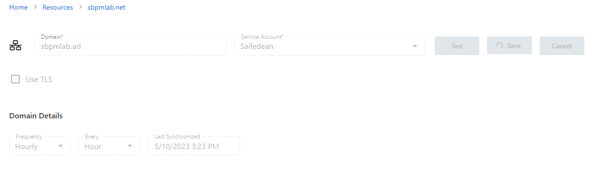
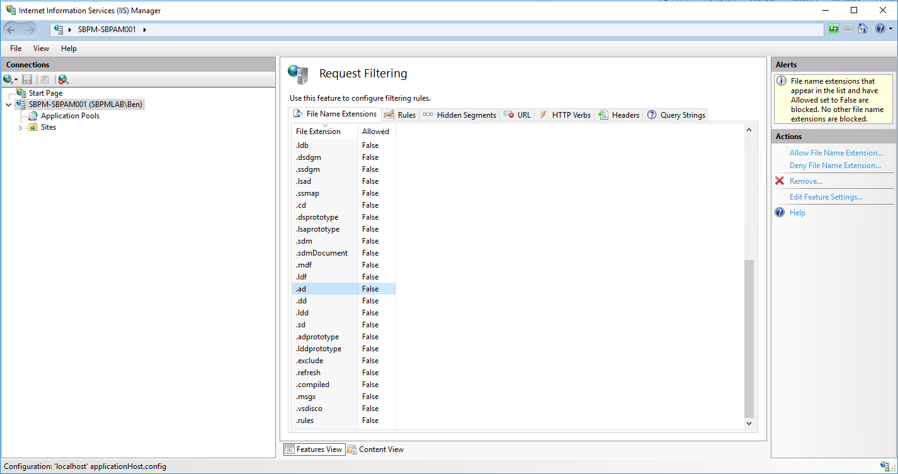

Summary
This article highlights the procedure for resolving problems where clicking the Save button after modifying an Active Directory domain Resource results in the "Save" button spinning. In this instance, the Frequency of the Sync schedule was just Saved:
This is a result of the ".ad" domain suffix being filtered by IIS.
Instructions
1. In order to remediate this, first open IIS Manager (inetmgr) on the Privilege Secure server.2. On the left hand tree, select the Privilege Secure server's node. The "file name extensions" tab should be visible.

3. Select the ".ad" extension and on the right hand pane, select "Remove".
4. In a command prompt, run "iisreset". You should now be able to save changes to the configuration on a domain ending in ".ad".